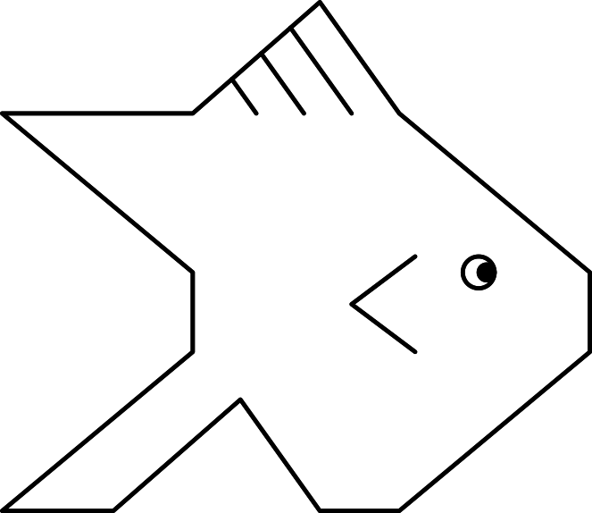
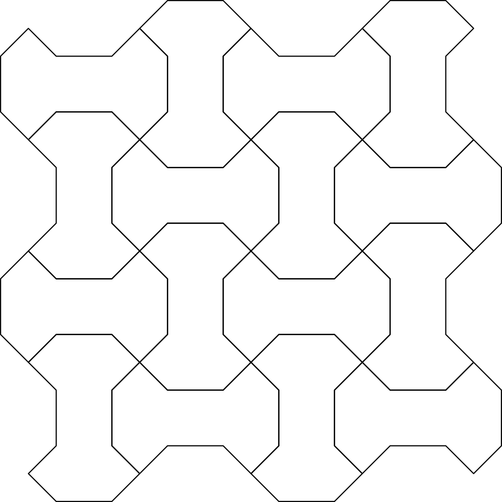
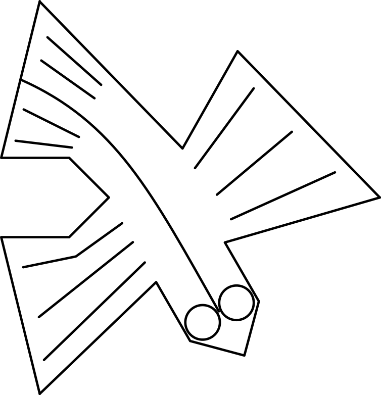
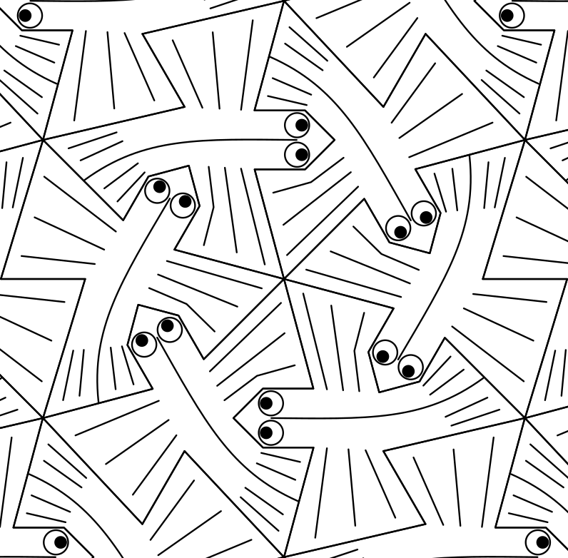
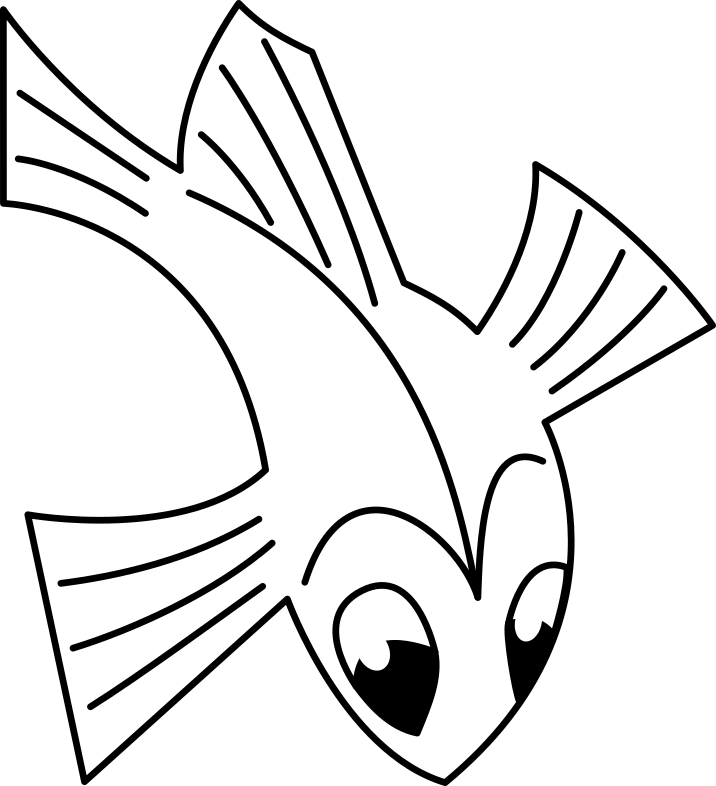
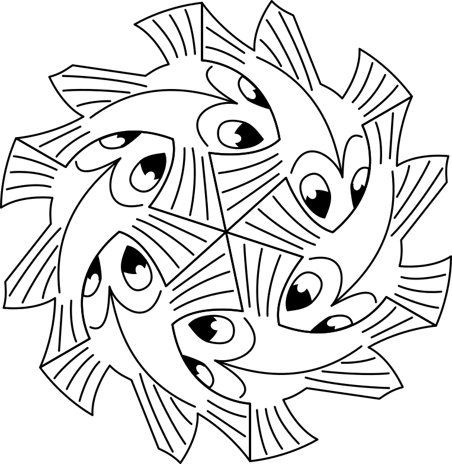
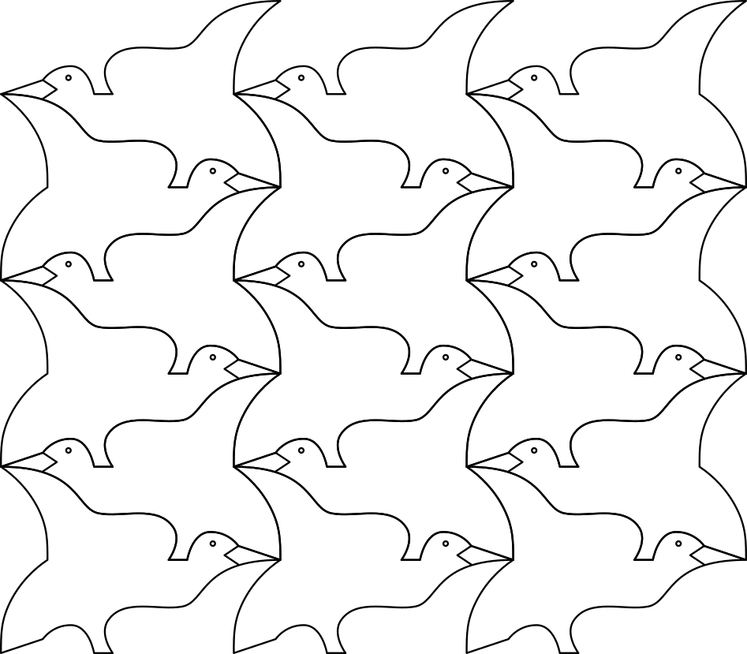

Teselados periódicos¶
Los teselados son patrones geométricos que cubren el plano sin dejar huecos ni solaparse. Se caracterizan por tener una "tesela" o región fundamental que, al moverse y girarse, reproduce todo el diseño.
Los teselados periódicos tienen al menos una región que se repite de forma ordenada mediante traslaciones en dos direcciones.
A continuación se presentan varias teselas ordenadas por su dificultad de construcción.
Índice de contenidos:
Tesela pez¶
Esta tesela está basada en un cuadrado. Solo requiere realizar una sencilla traslación horizontal o vertical para poder generar el teselado completo.
{kind=link}

Tesela de pez.¶

Teselado de peces.¶
{kind=link}
{kind=link}
Tesela hueso nazarí¶
Está tesela está basada en un cuadrado. Solo requiere realizar una sencilla traslación horizontal o vertical y un giro de 90 grados para poder generar el teselado completo.

Tesela de hueso nazarí.¶
{kind=link}

Teselado de huesos nazaríes.¶
{kind=link}
{kind=link}
Tesela pez volador¶
Esta tesela está basada en un triángulo equilátero. Necesita traslación y rotación de 60 grados para que las diferentes teselas encajen.
{kind=link}

Tesela de pez volador.¶
{kind=link}

Teselado de peces voladores.¶
{kind=link}
{kind=link}
Tesela pez curvo¶
Esta tesela está basada en un triángulo equilátero. Necesita traslación y rotación de 60 grados para que las diferentes teselas encajen.
{kind=link}

Tesela de pez curvo.¶
{kind=link}

Teselado de peces curvos.¶
{kind=link}
{kind=link}
Tesela pájaro¶
Esta tesela está basada en un rectángulo inclinado o romboide. Necesita traslación y también reflejo horizontal para que las diferentes teselas encajen. Por esa razón se han añadido dibujos de la tesela con reflejo horizontal.

Tesela de pájaro.¶
{kind=link}

Teselado de pájaros.¶
{kind=link}
{kind=link}
Tesela perro¶
Esta tesela, algo más compleja que la anterior, está basada en un cuadrado. Necesita traslación y también reflejo horizontal para que las diferentes teselas encajen. Por esa razón se han añadido dibujos de la tesela con reflejo horizontal.

Tesela de perro.¶

Teselado de perros.¶
{kind=link}
{kind=link}
Tesela salamandra¶
Esta es una tesela más compleja que las anteriores. Está basada en un hexágono regular y necesita tanto traslación como rotación de 120 grados para que las diferentes teselas encajen.

Tesela de salamandra.¶

Teselado de salamandras.¶
{kind=link}
{kind=link}